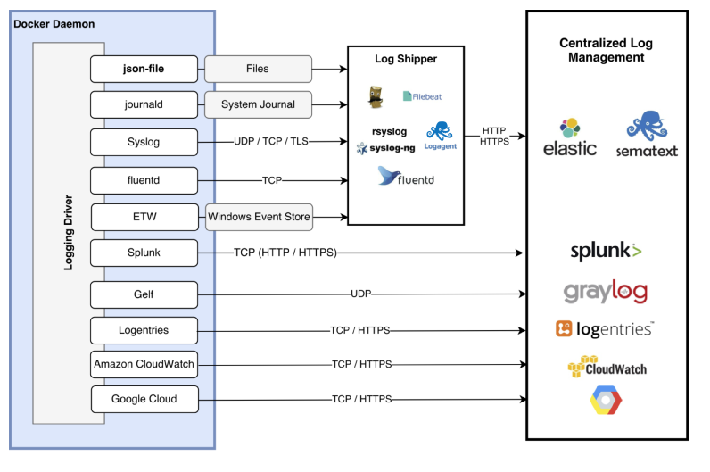
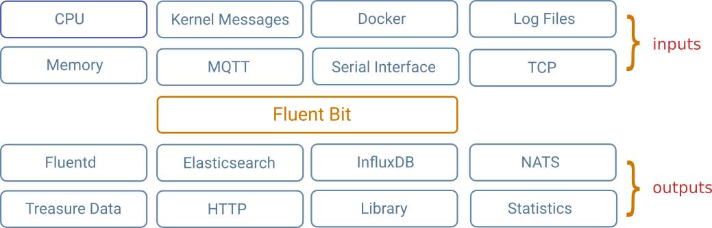
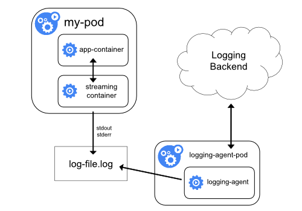

06 Docker 日志机制与监控实践
概述
日志和监控是容器云平台系统最常见的必备组件，形象一点形容其原理就是咖啡和伴侣一样必须配套使用，让你的应用运行的更贴合用户满意的服务运营目标（SLO）。当容器技术被大量行业采用之后，我们遇到了一个很自然的问题，容器化后应用日志怎么收集，监控报警怎么做。这些问题一直困扰着容器行业的从业者，直到以 Google Borgmon 为理论基础的 Prometheus 开源项目发布，EFK 日志系统的容器化实践落地，得以促成本篇文章的完成。
EFK 日志系统的容器化实践
日志系统涉及采集、展现和存储三个方面的设计。从采集方面来说，单台容器主机上的采集进程应该是多功能接口的、可以提供插件机制的日志组件才能满足一般采集的需求。那么到了容器这个领域，日志分为控制台日志和应用业务日志两类。对于容器控制台接口，需要通过容器进程开放的接口来采集，如图：

容器默认采用的是日志驱动为 json-file 模式，采集效率极低还占用大量 IO 读写效能，基本无法适应生产环境需要。在我们生产实践推荐中，偏向于采用系统提供的日志系统 systemd-journal 来接收日志采集，然后通过 fluentd 采集代理进程，把相应的日志按照业务规则分类汇聚，发送到 Elasticsearch 这样的中央日志管理系统。由于业务日志量的规模扩大，日志采集的流量速率会让中央日志系统处理负载过高，导致业务日志处理不过来。所以通常采用流式消息队列服务 Kafka 作为日志存储的异步缓冲，可以极大的缓解日志流量，并高效的解决日志采集的汇聚难题。
CNCF 云原生计算基金会推荐的采集解决方案是 Fluentd，作为行业标杆的托管项目，这个项目的插件是非常丰富的。所以，当你在考虑选择日志采集方案的时候，Fluentd 是当前一站式解决容器日志采集方案的首选，如下图：
因为 Fluentd 是一套 ruby 编写的日志采集框架，很难让人信服其海量的日志处理能力。所以在今年早些时候推出了基于 C 语言编写的高性能日志转发工具 fluentbit，可以完美承上输入层，起下输出层，如图：

日志收集到之后，会通过相应的过滤插件汇聚清洗日志条目并聚合到日志中心系统，系统用户通过可视化界面可以检索自己需要的日志信息。
随着 CNCF 在全球范围内吸收了业界主流云计算厂商，导致日志收集又遇到另一个需要解决的问题，那就是 Kubernetes 集群的日志收集问题。所以，我需要逐步按照收集的纬度给予介绍分析。首先，最基本的是 Pod 的日志信息，注意它并不等同于 Docker 容器的控制台日志。
例如 Pod 任务counter-pod.yaml：
apiVersion: v1
kind: Pod
metadata:
name: counter
spec:
containers:
- name: count
image: busybox
args: [/bin/sh, -c,
'i=0; while true; do echo "$i: $(date)"; i=$((i+1)); sleep 1; done']
发布这个 Pod 到集群中：
$ kubectl create -f https://k8s.io/docs/tasks/debug-application-cluster/counter-pod.yaml
pod "counter" created
查看日志：
$ kubectl logs counter
0: Mon Jan 1 00:00:00 UTC 2001
1: Mon Jan 1 00:00:01 UTC 2001
2: Mon Jan 1 00:00:02 UTC 2001
...
Kubernetes 默认使用容器的 json-file 驱动来写入日志文件，并使用 logrotate 来收敛日志大小。
除了 Pod 之外，我们还需要考虑 Kubernetes 系统组件的日志收集工作。例如这样的场景：
- Scheduler 和 kube-proxy 是容器化运行
- Kubelet 和 Docker 是非容器化运行
对于容器化的系统组件，他们都是采用 glog 来写入日志的并存入 /var/log 目录下，可以采用logrotate 来按大小分割日志。对于非容器化的系统组件，直接采用系统内建的 systemd-journal 收集即可。
当然对于分布式系统的日志收集，还可以通过发布日志采集容器组件的方式来采集日志。最好的方式是采用 sidecar 的方式，每个 Pod 中加入一个日志采集器，方便日志的采集流式进入日志系统中。

当应用日志需要落盘的时候，这种 sidecar 模式的日志采集方式尤其灵活，值得推荐采用。
容器监控实践
容器监控需要关心的指标范畴主要集中在主机、集群、容器、应用以及报警规则和报警推送。监控的指标也大多放在了 CPU、RAM、NETWORK 三个纬度上面。当然业务应用如果是 Java 系统，还有收集 JMX 的需求存在，从容器角度来讲仅需要暴露 JMX 端口即可。很多开始做容器监控的从业者会考虑使用现有基础监控设施 Zabbix 来做容器监控。但是从业界发展趋势上来说，采用 Prometheus 的解决方案会是主流方案。首先，我们可以通过 Prometheus 的架构来了解监控的流程架构图如下：
它采用 Pull 模式来主动收集监控信息，并可以采用 Grafana 定制出需要的监控大屏面板。从收集探针角度，Prometheus 有很多输出指标的插件可以使用。注意插件 exporter 的工作目的是能把监控数据缓存起来，供 Prometheus 服务器来主动抓取数据。从生产级别 HA 的需求来看，目前 Prometheus 并没有提供。所有我们需要给 Prometheus Server 和 AlertManager 两个组件提供 HA 的解决方案。
HA Prometheus
当前可以实施的方案是建立两套一模一样配置的Prometheus 服务，各自独立配置并本地存储监控数据并独立报警。因为上面介绍了 PULL 的拉取采集方式，对于两个独立的 Prometheus 服务来说是完全可行的，不需要在客户端配置两份监控服务地址。记住两套 Prometheus Server 必须独立，保证一台当机不会影响另外一台 Server 的使用。
HA AlertManager
AlertManager 的 HA 配置是复杂的，毕竟有两个Prometheus Server 会同时触发报警给 AlertManager，用户被报警两遍并不是一个好主意。当前 HA 还在开发过程中，采用了Mesh技术帮助 AlertManager 能协调出哪一个接受者可以报告这次警告。
另外，通过 PromSQL 的 DSL 语法，可以定制出任何关心的监控指标：如图：
定义报警规则的例子如下：
task:requests:rate10s =
rate(requests{job=”web”}[10s])
同时我们还关注到当前 Prometheus 2.0 即将发布 GA，从 RC 版本透露新特性是时间序列数据存储的自定义实现，参考了 Facebook 的 Gorilla（Facebook’s “Gorilla” paper），有兴趣的可以关注一下。
另外，Prometheus 还有一个痛点就是系统部署比较麻烦，现在推荐的方式是采用 Operator 的模式发布到K8S 集群中提供服务（Prometheus Operator），效率高并且云原生架构实现。
总结
Docker 日志机制已经没有什么技巧可以优化。这个也证明了容器技术的成熟度已经瓜熟蒂落，并且在日常应用运维中可以很好的实施完成。主要的实践重点在于日志体系的灵活性和日志数据处理能力方面的不断磨合和升级，这是容器技术本身无法支撑的，还需要用户结合自身情况选择发展路线。
对于监控系统，时间序列数据库的性能尤为重要。老版本的 Prometheus 基本都是在采集性能上得不到有效的发挥，这次2.0版本完全重写了一遍 tsdb，经过评测发现比老版本性能提升3-4倍，让人刮目相看。期待正式版本的推出，可以让这套云原生的监控系统得到更好的发展。
参考：
© 2019 - 2023 Liangliang Lee. Powered by gin and hexo-theme-book.